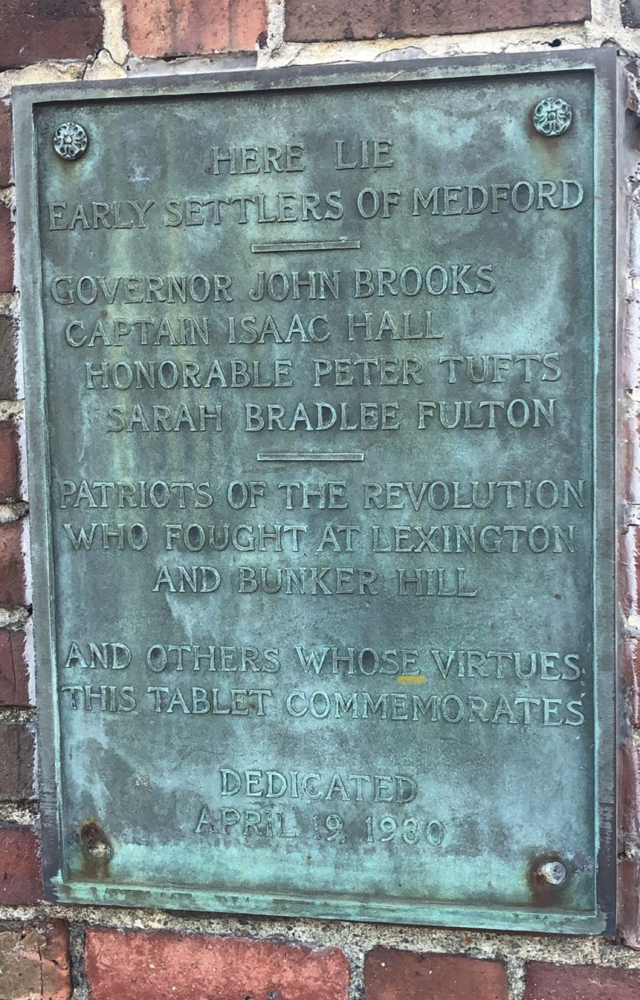

Medford’s oldest burial ground, on Salem Street, holds the elder and younger Drs. Simon Tufts and many of the town’s Revolutionary generation. In Medford’s tercentenary year, 1930, the city rebuilt its wall and gate and set two bronze tablets on the gate pillars.
Tufts association: Burial place of Dr. Simon Tufts (1700–1747) and Dr. Simon Tufts (1727–1786), plot 35; the 1930 gate tablet names an “Honorable Peter Tufts,” his grandfather Capt. Peter Tufts. (Vital Records of Medford, Massachusetts, to the Year 1850 (1907), p. 445, deaths; key “G.R.1 — gravestone record, Salem Street Cemetery.” Internet Archive; Find a Grave 26903835, 26903836; “Medford’s Tercentenary Observances,” Medford Historical Register, vol. XXXIII, nos. 1–2 (March–June 1930), pp. 1–2. Internet Archive text · Library of Congress scan (PDF))
The 1930 Tercentenary Tablets
The Register describes the Patriots’ Day exercises of 1930: “The city had reconstructed the enclosing wall of brick and concrete with granite cap, with a well-designed iron gate at the entrance on Salem street. Bronze tablets had been placed upon its pillars.” It then prints the two inscriptions, given here line by line as printed:
Ye OLDE
MEDFORD
BURYING GROUND
IN USE PRIOR TO
1683
THIS TABLET DEDICATED
APRIL 19, 1930
IN MEDFORD’S
TERCENTENARY YEAR

HERE LIE
EARLY SETTLERS OF MEDFORD
GOVERNOR JOHN BROOKS
CAPTAIN ISAAC HALL
HONORABLE PETER TUFTS
SARAH BRADLEE FULTON
PATRIOTS OF THE REVOLUTION
WHO FOUGHT AT LEXINGTON
AND BUNKER HILL
AND OTHERS WHOSE VIRTUES
THIS TABLET COMMEMORATES
DEDICATED
APRIL 19, 1930
“Medford’s Tercentenary Observances,” Medford Historical Register, vol. XXXIII, nos. 1–2 (March–June 1930), pp. 1–2. Internet Archive text · Library of Congress scan (PDF)
The Register adds that a bronze tablet reproducing the old inscription was placed on the Governor Brooks monument, and a memorial flagstaff was set up near River Street.
Which Peter Tufts?
The tablet’s “Honorable Peter Tufts” is Capt. Peter Tufts (c. 1648–1721) of the Peter Tufts House, father of the elder Dr. Simon. He is the only grown Peter Tufts whose gravestone the Medford records place in this ground. The 1907 Medford vital records list his death with the reading of his stone here:
Peter, Capt, Sept. 19, 1721. [Sept. 20, a. 73, G.R.1.]
His wife’s entry carries the same mark: “Mercy, w. Capt. Peter, June 18 … 1715. [Marcy, June 18, a. 48, G.R.1.]”
Vital Records of Medford, Massachusetts, to the Year 1850 (1907), p. 445, deaths; key “G.R.1 — gravestone record, Salem Street Cemetery.” Internet Archive
He was Medford’s first representative to the General Court. The town record of June 4, 1689 reads: “Ensign Peter Tufts was chosen by the town as Representative,” and on May 21, 1690 he “was chosen Deputy” (Brooks, History of Medford, 1855, ch. 4, Perseus). The same 1930 Register issue that prints the tablet describes the tercentenary pageant: “Peter Tufts rides by on his way to Boston as Medford’s first representative” (“Medford’s Tercentenary Observances,” Medford Historical Register, vol. XXXIII, nos. 1–2 (March–June 1930), pp. 1–2. Internet Archive text · Library of Congress scan (PDF)). The Medford Historical Society and Freedom’s Way also name “Captain Peter Tufts” among those buried here.
Brooks’s 1855 History (p. 484) prints the same stone, “Here lies buried the body of Capt. Peter Tufts, who died Sept. 20, 1721, aged 73 years,” but says it is “in the graveyard at Malden” (Perseus). The later vital records place that stone at Salem Street, and it is his father, Peter the immigrant (d. 1700), whom Brooks and Wyman place at Malden. The only other Peter Tufts in the Salem Street stone records is an infant, “Peter, s. Thomas and Mary, Oct. 1, 1714. [a. 7 m., G.R.1.]”
Capt. Peter died in 1721, so the tablet’s line about “patriots of the Revolution” does not apply to him; it lists early settlers and patriots together.
⚑ Unverified
Why the tablet styles him “Honorable.” No source found explains the title. His service as representative is the likely reason, but the 1930 Register gives no reasoning for the names chosen. Note: Pending further work.
Also Here
The burying ground was used “as early as 1683” and was listed on the National Register of Historic Places in 1981 (Medford Historical Society; Freedom’s Way). A 2019 student memorial marks the southwest corner, where more than fifty enslaved people were buried without recognition (Freedom’s Way).